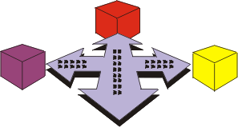

|
В дисциплине развертывания различаются три режима поставки продукта:
-
индивидуальная установка
-
самостоятельная установка массового продукта пользователем
-
доступ к программному обеспечению через Internet

Во всех случаях сначала продукт тестируется в среде разработки, затем проводится тестирование его бета-версии, и только
после этого продукт официально выпускается.
Хотя большинство операций дисциплины развертывания выполняются на этапе внедрения, некоторые из них, связанные с
планированием и подготовкой развертывания, выполняются на предыдущих этапах.
Дисциплина развертывания связана с другими дисциплинами следующим образом:
-
Дисциплина управления требованиями посвящена разработке спецификаций требований к программному обеспечению,
в состав которых входят модели прецедентов и нефункциональные требования. Прототип интерфейса и спецификации
требований к программному обеспечению - важнейшие источники данных для разработки справочных и учебных материалов.
-
С развертыванием тесно связано тестирование, в ходе которого создаются сводные результаты тестирования и
разрабатываются операции реализации и выполнения тестов и управления тестами.
-
Дисциплина управления конфигурацией и изменениями используется для создания контрольной версии и выпуска
продукта вместе с механизмами управления запросами изменений, созданными в ходе тестирования beta-версии и приемки.
-
Операции дисциплины управления проектом, выполняемые для разработки плана итерации и плана разработки
программного обеспечения, оказывают косвенное влияние на разработку плана развертывания. Кроме того, планирование
приемки продукта должно быть скоординировано с управлением приемкой в рамках дисциплины развертывания.
-
Дисциплина управления средой обеспечивает среду поддержки тестирования.
|